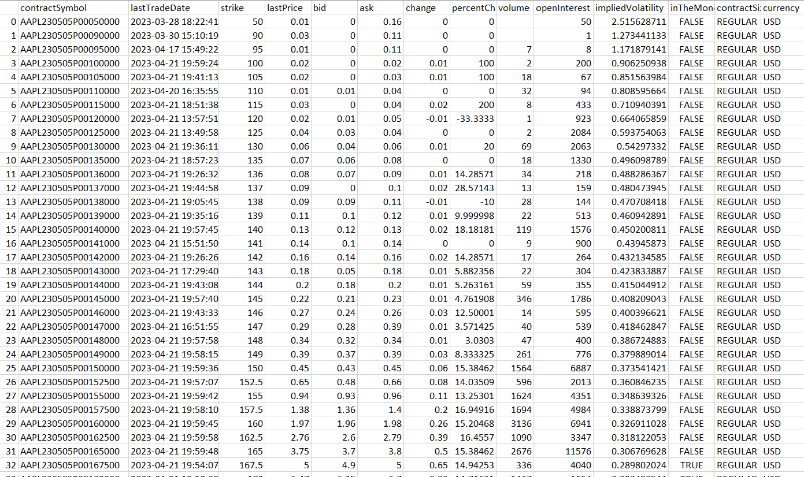

This project started when I was looking for data to evaluate a particular earnings strategy. SoFi, a particularly high IV stock which I had made good profits on before (>50% during the January-February 2023 rally), looked like a profitable stock to sell vega on. From the free sources I was able to access, its implied move has been historically significantly higher than its realized move, and its high IV nature made premiums particularly attractive. However, when trying to access actual figures to determine the best DTEs and strikes, that data was locked behind a $99 per month paywall, something that I was not willing to pay for considering the relatively small size of my portfolio, which would have wiped out all the potential profits from the strategy.
Confident in my programming skills, I then decided to create a script that would gather data from certain companies, which I could then use to perform analyses in the future. I also had a clear idea of what was needed to create such a program, having created finance-related data projects in the past, like a portfolio analysis program, which would compare one’s performance relative to a symbol of the user’s choice when given a transaction log.
I first had to determine a few technical aspects related to data storage. What file format should I use? Where would these files be stored? How should I structure my folders and files? Having some past experience with pandas, a python library, and knowing it had an easy way of storing and accessing data through .csv files, it was decided this is the format that would be used. However, as of May 17th, I am currently in the process of changing the file format to parquet for more efficient storage and faster access.
For the file structure, after much experimentation, it seemed that storing each expiration date’s data into its own file seemed the easiest, one each for puts and calls, stored into one folder per symbol, and one folder per day (see image below). While it leads to a ton of files for each symbol, it functionally doesn’t matter since the data is going to be retrieved by a computer which doesn’t care much about going down multiple folders to fetch a file. The upside is a consistent structure allows for easier debugging should a problem arise, and less headaches when manually looking for a file. It also means when data is accessed, only one table has to be loaded, instead of all that day’s data.
Example file structure:
For example, if I wanted to see the closing price on May 7th for the SPY $415 call expiring May 12th 2023, the program only needs to access the file containing data for that specific expiration date and option type. No need to load data for the May 19th expiration, or that day’s puts. This leads to significantly lower access times especially for high volume symbols, which may have 20 expiration dates at any time, at the expense of some storage and speed when gathering the data.
Below, you can find a typical table containing the data for a single expiration date:
Theoretically, some columns could be cut out like the "contractSymbol" or "contractSize" to save some storage space. But in the event that this data becomes relevant in the future, it was decided to keep it, at the expense of a few kilobytes per day.
Numpy was also used for its numpy.where() function when trying to find the index of a particular strike price, and tqdm to generate a progress bar and estimated completion time, but these latter two libraries had a much more reduced role compared to the other five.
Next is the option data gathering function. We pass it a particular ticker, and a global variable “date”, which is just today’s date. It then generates a tuple containing all the expiration dates for that ticker. The program then loops over each expiration date, and fetches the call and put data separately. It then checks if the folder it is trying to store the data in exists, if not the folder is created using the os library to avoid an error. As mentioned earlier, the program stores everything in a main folder named “csvs”, then each symbol has its own folder, and inside said folder each day we create a new one containing that day’s data. Since the directory stays the same throughout, we assign a variable “directory” to avoid recalculating the path everything it is invoked. If there is either no put or call data, the program forgoes storing them, to avoid unnecessary processing and storage.
The function used to gather a ticker's option data:
Sometimes, during the first experimentation phase, the program would throw an error for no apparent reason, since when manually re-run, the ticker that threw the error would store the data just fine. As a simple work around, a try/except loop was added, where if an error was thrown for any reason, the function would print what symbol was at fault, and switch the “error” variable from False to True.
Here we can see the loop that generates the data for each symbol. “tickers” is a list loaded from a csv file of all the symbols the program should go over. For each ticker, the previous optionData() function is called, and if the error value it returns is True, the symbol is stored in another list named “errorLog” for further processing.
When all the symbols have been run through the storage function, the program goes through the errorLog that was previously generated. For each symbol in the errorLog, the program attempts to run them again, in the hopes that the first error was a fluke. If the function runs successfully, that symbol is removed from the errorLog. If not, after all the symbols have been run through, the program attempts to run the symbols again. After the maxErrorAttempts have been reached, which is currently set at 5, or if the errorLog contains no symbols, the program stops trying to avoid an infinite while loop.
Finally, the program finished by writing a log containing the start & end times, as well as any symbols remaining in the errorLog. Even with 4,700 tickers, so far no log has contained any symbols for which data couldn’t be stored, a testimony to the error handling’s robustness.
Since one of the project’s goals is to run automatically, it became clear early on that it would require a separate computing unit that could run a script at set times. I would also need a means of storage that could connect to the computer and store files as needed. Thankfully, I brought an old 2TB hard-drive to campus in the chance that it would be needed for a project, so the storage was taken care of. I then began looking for a Single Board Computer (SBC), as their compact nature and low power requirements seemed like a perfect fit. I looked for Raspberry Pi’s as they were the most renowned and being an outsider to the world of SBCs they were the only product family I had heard of. Unfortunately, they seem to be still suffering from supply issues, leading them to be not only scarce, but also offered from three to five times their MSRP, so it was a hard pass. After some research, the Libre Computing “Renegade” seemed to check all the boxes while also sporting the most reasonable price of all comparable SBCs at $40 for the 2GB of RAM version.
To reduce the load on the computer as much as possible, the choice of OS was Debian Linux, a command-line only operating system which is as barebones as it gets. OpenMediaVault was also installed, which gave Network Attached Storage capabilities to the computer. This allowed remote access to the files stored on the board through the file explorer on Windows or Fedora Linux (which I use on my laptop) through SMB.
Finally, since I do not have admin access to my router at my on-campus apartment, I am not able to perform port-forwarding, which would allow access to the SBC outside of my home network. To circumvent this limitation, ZeroTier was installed on every machine that needed access to the files. ZeroTier is essentially a VPN that allows every device to connect to a single server, and act as if said devices were on the same network. This now allowed me to connect remotely to my mini-server from anywhere on campus, and theoretically anywhere in the world, although I haven’t put that to the test just yet. This also allows me to SSH into the mini-server at any time and run commands as needed, allowing me to debug if necessary.
There were also other considerations hardware-wise. Cooling was one of them; if the system were to stay on for 24 hours a day as planned, there is no period where the processing chip on the SBC is not running and therefore cooling itself down. Thankfully, the board manufacturer also sells a heatsink that can easily be installed using pre-drilled holes. A fan was also bought to provide air-flow, which raised the question, where is the fan going to go? Simply placing it on top of the board was not really an option for a multitude of reasons, and so some standoffs were needed. Ideally, there would also be a compartment for the hard-drive to slot in below, to reduce the space needed for the whole system, and take advantage of the cooling provided by the fan. An enclosure was then designed in Fusion 360, with a top-plate containing pegs for the board to slot into, while also removing as much material as possible to save on cost and allow for airflow to the hard-drive bay below. I then bought some bolts from Walmart to act as standoffs, as they were less expensive and more reliable than 3D printing them would have been.
Final enclosure design inside Fusion 360:
Final assembly (note: hard-drive bay has yet to be printed):